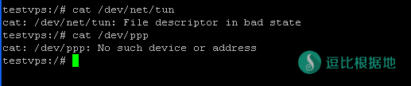

目前 VPN方式科学上网 效果不如以前，防火墙针对性更强，部分地区干扰封锁严重，如非必须，不推荐使用！
其他VPN教程：
本脚本适用环境：
系统支持：CentOS6+，Debian7+，Ubuntu12+
内存要求：≥128M
更新日期：2016 年 09 月 12 日
关于本脚本：
名词解释如下
L2TP（Layer 2 Tunneling Protocol）
IPSec（Internet Protocol Security）
IKEv2 (Internet Key Exchange v2)
能实现 IPsec 的目前总体上有 openswan，libreswan，strongswan 这3种。
libreswan 是基于 openswan 的 fork，所以现在各个发行版基本已经看不到 openswan 的身影了。当然也有使用 strongswan 的。
之所以要更新 L2TP 一键安装脚本，是因为随着各个 Linux 发行版不断推陈出新，原有的脚本已经不适应现在的需求。
本脚本通过编译安装最新版 libreswan 来实现 IPSec（CentOS7 下则是全部 yum 安装），yum 或 apt-get 来安装 xl2tpd，再根据各个发行版的使用方法不同，部署防火墙规则。
写在前面：
本教程涉及SSH操作，如果你不会你需要看一下这篇文章：Linux SSH链接工具 Putty 新手详细使用教程
基于 OpenVZ 虚拟化技术的 VPS 需要开启TUN/TAP才能正常使用，购买 VPS 时请先咨询服务商是否支持开启 TUN/TAP。
纠正：OpenVZ 虚拟的 VPS 需要系统内核支持 IPSec 才行。也就是说，母服务器的内核如果不支持的话那就没办法，只能换 VPS。
因此，一般不建议在 OpenVZ 的 VPS 上安装本脚本。脚本如果检测到该 VPS 为 OpenVZ 架构，会出现警告提醒。
如何检测是否支持TUN模块？
检查PPP/TUN环境
首先要检查VPS的是否能安装pptpd，TUN和PPP是否开启。
cat /dev/net/tun
返回的必须是:
cat: /dev/net/tun: File descriptor in bad state
运行:
cat /dev/ppp
返回的必须是:
cat: /dev/ppp: No such device or address
如果返回内容不是下图的结果的话，请与VPS提供商联系更改网络权限。
当然，脚本在安装时也会执行检查，如果不适用于安装，脚本会予以提示。

使用方法：
root用户登录后，运行以下命令：
wget --no-check-certificate https://raw.githubusercontent.com/teddysun/across/master/l2tp.sh chmod +x l2tp.sh ./l2tp.sh
执行后，会有如下交互界面
Please input IP-Range: (Default Range: 192.168.18): #输入本地IP段范围（本地电脑连接到VPS后给分配的一个本地IP地址），直接回车意味着输入默认值192.168.18 Please input PSK: (Default PSK: teddysun.com): #PSK意为预共享密钥，即指定一个密钥将来在连接时需要用到，直接回车意味着输入默认值teddysun.com Please input Username: (Default Username: teddysun): #Username意为用户名，即第一个默认用户。直接回车意味着输入默认值teddysun Please input teddysun’s password: (Default Password: Q4SKhu2EXQ): #输入用户的密码，默认会随机生成一个10位包含大小写字母和数字的密码，当然你也可以指定密码。 ServerIP:your_server_main_IP #显示你的 VPS 的主 IP（如果是多 IP 的 VPS 也只显示一个） Server Local IP:192.168.18.1 #显示你的 VPS 的本地 IP（默认即可） Client Remote IP Range:192.168.18.2-192.168.18.254 #显示 IP 段范围 PSK:teddysun.com #显示 PSK Press any key to start…or Press Ctrl+c to cancel #按下任意按键继续，如果想取消安装，请按Ctrl+c键
安装完成后，脚本会执行 ipsec verify 命令并提示如下：
If there are no [FAILED] above, then you can connect to your L2TP VPN Server with the default Username/Password is below: ServerIP:your_server_IP PSK:your PSK Username:your usename Password:your password If you want to add users, please modify /etc/ppp/chap-secrets and add it. Welcome to visit https://teddysun.com/448.html Enjoy it!
如果你要想增加用户，有以下命令可以操作用户：
l2tp -a 新增用户 l2tp -d 删除用户 l2tp -l 列出所有用户 l2tp -m 修改用户密码 l2tp -h 列出帮助信息
其他事项：
- 脚本在安装完成后，已自动启动进程，并加入了开机自启动。
- 脚本会改写 iptables 或 firewalld 的规则。
- 脚本安装时，会即时将安装日志写到 /root/l2tp.log 文件里，如果你安装失败，可以通过此文件来寻找错误信息。
使用命令：
ipsec status （查看 IPSec 运行状态） ipsec verify （查看 IPSec 检查结果） /etc/init.d/ipsec start|stop|restart|status （CentOS6 下使用） /etc/init.d/xl2tpd start|stop|restart|status （CentOS6 下使用） systemctl start|stop|restart|status ipsec （CentOS7 下使用） systemctl start|stop|restart|status xl2tpd （CentOS7 下使用） service ipsec start|stop|restart|status （Debian/Ubuntu 下使用） service xl2tpd start|stop|restart （Debian/Ubuntu 下使用）
更新日志
2016 年 04 月 18 日更新
目前在 Debian 7 上测试的结果，因为 libnss3 和 libnspr4 的版本过低而导致编译 libreswan 失败。临时解决办法是 dpkg 安装 libnss3_3.17.2 和 libnspr4_4.10.7 的 deb 包后重试
参考链接：https://libreswan.org/wiki/3.14_on_Debian_Wheezy
2016 年 04 月 19 日更新
修复了在 Debian 7 下因为 libnss3 和 libnspr4 的版本过低而导致编译 libreswan 失败的问题。
2016 年 04 月 22 日更新
修复了在 Ubuntu 16.04 下因为默认缺少 python 命令而导致 ipsec verify 等命令不能用的问题。
2016 年 04 月 25 日更新
在 Vultr 的 Debian 7 的系统模板下安装时，软件包 libcurl4-nss-dev 会出现依赖错误。如下：
The following packages have unmet dependencies: libcurl4-nss-dev : Depends: libldap2-dev but it is not going to be installed Depends: librtmp-dev but it is not going to be installed
而 libldap2-dev 和 librtmp-dev 又依赖了其他几种软件包。总之最后的依赖关系如下：
libldap2-dev : Depends: libldap-2.4-2 (= 2.4.31-2+deb7u1) but 2.4.31+really2.4.40+dfsg-1+deb8u1~bpo70+1 is to be installed librtmp-dev : Depends: libgnutls-dev but it is not going to be installed libgnutls-dev : Depends: libp11-kit-dev (>= 0.4) but it is not going to be installed libp11-kit-dev : Depends: libp11-kit0 (= 0.12-3) but 0.20.7-1~bpo70+1 is to be installed
那么解决办法就是把最底层的依赖包 libp11-kit0 先卸载掉，然后再安装 libcurl4-nss-dev 即可。
apt-get -y remove libp11-kit0 apt-get -y --no-install-recommends install libcurl4-nss-dev
然后再运行脚本安装即可。
2016 年 06 月 10 日更新
脚本在安装完成后，新增了几个命令，用于操作用户
l2tp -a 新增用户 l2tp -d 删除用户 l2tp -l 列出所有用户 l2tp -h 列出帮助信息
2016 年 08 月 05 日更新
升级 libreswan 到版本 3.18。
2016 年 09 月 12 日更新
修正了在 CentOS 6 下 libevent2 依赖的问题；
新增了一个 -m 选项，用以修改现有用户的密码。
其他VPN教程：
本文章转载自秋水逸冰：https://teddysun.com/448.html
转载请超链接注明：逗比根据地 » CentOS/Debian/Ubuntu全系统 L2TP/IPSec一键安装脚本
责任声明：本站一切资源仅用作交流学习，请勿用作商业或违法行为！如造成任何后果，本站概不负责！